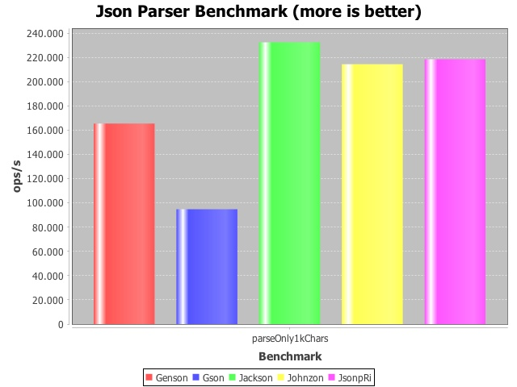
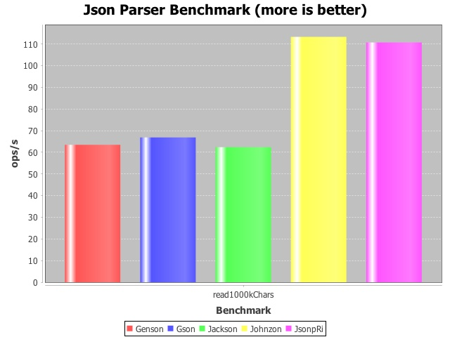
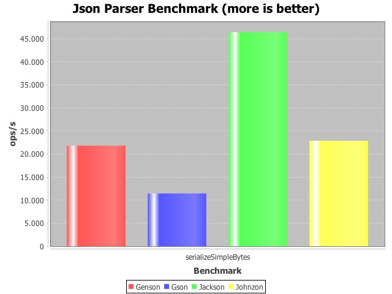

Johnzon - Apache’s Upcoming JSON Library
Hendrik Saly, codecentric AG
About the Apache Incubator
"The Incubator project is the entry path into The Apache Software Foundation (ASF) for projects and codebases wishing to become part of the Foundation’s efforts." (http://incubator.apache.org/)
The Apache Incubator has two primary goals:
Ensure all donations are in accordance with the ASF legal standards
Develop new communities that adhere to our guiding principles
What is Johnzon?
Lightweight JSON library written in Java
Core < 90k, 200k for the whole library
No external dependencies
Implementation of JSR-353
Apache 2 License
What is Johnzon? (cont.)
Contains also modules which are not defined in JSR-353
Object mapper
JAX-RS provider
Websocket (JSR-356) integration (beta)
JSON DSL for mutating documents comfortably (beta)
Status of the project
Small but engaged, responsive and friendly community
Stable and production ready
Performance for Johnzon core is quite well
Currently incubating within the Apache Incubator
and looking for new community members
low entrance barrier
Plan is to graduate soon (start this year)
Roadmap
Implement JSR-367 (API for JSON Binding/JSON-B)
Implement JSR-374 (Update of JSR-353)
Performance enhancements
Increase test coverage
JEE certification (once TCK available)
Current users of Johnzon
Apache TomEE 2
Apache Tamaya
Apache Decanter
JSR
The spec part
What is a JSR
JSR → Java Specification Request
A formal standardization process
Community involved
Controlled by Oracle within the Java community process (JCP)
JSR-353 Basics
Can be used standalone or within a JEE container
Provides a streaming API as well as a "Tree Model" API for parsing
Generator API for generating valid JSON streams
Streaming API
Pull parser, parse JSON files of any size
Encoding autodetection
JsonParser parser = Json.createParser(new FileReader("file.json"));
while(parser.hasNext() {
Event event = parser.next();
if(event == Event.VALUE_STRING) {
System.out.println(parser.getString());
}
}Encoding autodetection
RFC 4627 Chapter 3
"JSON text SHALL be encoded in Unicode"
First two character are always ASCII
So we can use this matrix to detect encoding:
00 00 00 xx UTF-32BE
00 xx 00 xx UTF-16BE
xx 00 00 00 UTF-32LE
xx 00 xx 00 UTF-16LE
xx xx xx xx UTF-8(Johnzon does also handle octet-streams with BOM’s correctly)
"Tree Model" API
Parse JSON to immutable object tree
Caution: All in-memory
JsonReader reader = Json.createReader(new StringReader("[]"));
JsonArray array = reader.readArray();
System.out.println(array.isEmpty());
System.out.println(array.get(0));
jsonReader.close();Generator API
Write JSON "value by value" into a byte/char stream
Writer writer = ...;
JsonGenerator generator = Json.createGenerator(writer);
generator
.writeStartObject()
.write("firstName", "Mister")
.write("lastName", "Spock")
.write("age", 99)
.writeStartObject("address")
.write("streetAddress", "Kolinahr Street 1")
.write("city", "Vulcan City")
.write("state", "VU")
.write("postalCode", "1701")
.writeEnd()
.writeEnd();
generator.close();Writer API
Write the "Tree Model" back into a byte/char stream
Outputstream out = ...;
JsonObject jo = ...;
JsonWriter jsonWriter = Json.createWriter(out);
jsonWriter.writeObject(jo);
jsonWriter.close();Configuration
Key-Value based
Implementation dependent
Via factories
final JsonReader reader = Json.createReaderFactory(new HashMap<String, Object>() {
put("org.apache.johnzon.supports-comments", true);
}).createReader(...);
JsonParser generator = Json.createGeneratorFactory();
JsonGenerator generator = Json.createGeneratorFactory();Johnzon
in particular
Johnzon non JSR-353 Features
Comments (single line/multiline)
Configurable buffer sizes
Different buffer reuse strategies
QUEUE - char[] are reused by ConcurrentLinkedQueue (default)
BY_INSTANCE - char[] are not reused
SINGLETON - char[] are reused by only one global char[]
THREAD_LOCAL - char[] are reused by thread (every thread does have its char[] buffer bound to a thread local)
The "Mapper"
JSON←→Java Binding
Used by JAX RS provider/Websocket module
Supports
Custom de-/serializers
Proper handling of collections and generics
@JohnzonConverter and @JohnzonIgnore annotations
Works with fields, getter/setter or both
Configurable null/empty handling
Configurable byte[] handling
The "Mapper" (cont.)
final static Mapper mapper = new MapperBuilder().build();
MyObject myObj = ...;
mapper.writeObject(myObj, outputStream);
MyObject myObj2 = mapper.readObject(inputStream, MyObject.class);(Yet some missing default datatypes for Java SE 8 like java.time.*)
The "Mapper" (cont.)
Works mostly hassle free
Will be aligned with JSON-B Spec (JSR-367)
Need some performance tuning
JAX-RS Provider
<Service id="johnzon"
class-name="org.apache.johnzon.jaxrs.ConfigurableJohnzonProvider">
ignores = com.foo.MyType,com.foo.MyOtherType
accessMode = method
supportHiddenAccess = true
doCloseOnStreams = false
version = 2
skipNull = true
skipEmptyArray = true
</Service>Websockets
Since Johnzon 0.8 there is a Websocket/JSR-356 integration
JSON as payload format for WebSocket messages
https://rmannibucau.wordpress.com/2015/03/24/json-and-websocket-johnzon-to-the-rescue/
Websockets (cont.)
Server
@ServerEndpoint(value = "/server", encoders = JohnzonTextEncoder.class,
decoders = JohnzonTextDecoder.class)
public class MyServerEndpoint {
// same as before
}Client
public class MessageDecoder extends JohnzonTextDecoder {
public MessageDecoder() {
super(Message.class);
}
}
// and used like:
@ClientEndpoint(encoders = JohnzonTextEncoder.class, decoders = MessageDecoder.class)
public class ClientEndpointImpl {
// ...
}Johnzon DSL
Upcoming with Johnzon 2
Mutable and navigable JSON Structure
Fluent API
Johnzon DSL (cont.)
Looks like:
JsonObject jo = ...;
MutableJsonStructure ms = MutableJsonStructureFactory.toMutableJsonStructure(jo);
assertNotSame(ms, ms.copy());
assertFalse(ms.isLeaf("address"));
assertFalse(ms.isLeafNull("firstName"));
assertTrue(ms.exists("phoneNumber"));
assertEquals(1, ms.get("phoneNumber").get(1).getAncestor().getIndex());
assertNull(ms.getParent());
assertEquals("Smith", ms.getLeafAsString("lastName"));
assertEquals("NY", ms.get("address").getLeafAsString("state"));
assertEquals(5, ms.getKeys().size());
assertEquals(5, ms.size());
assertEquals(4, ms.get("address").size());
ms.add("additionalAddress", ms.get("address").copy().remove("city").set("state", "CA"));
ms.set(ms.copy().remove("phoneNumber"));
assertEquals(5, ms.size());
JsonObject modJo = (JsonObject) ms.toJsonStructure();Benchmark
JMH based benchmark suite
Bytes, Chars (UTF-8/UTF-16)
Measurements
Parse Only
Read to "Tree Model"
Generate JSON
Serialize
Deserialize
Benchmark (cont.)
Small size JSON

Benchmark (cont.)
Medium size JSON (byte stream)

Benchmark (cont.)
Medium size JSON (character stream)

Benchmark (cont.)
Serialize simple Java Object

Testcoverage
Approx. 74% testcoverage yet
We want to get above 90%
Upcoming
The new JSON JSR Specs
JSR-374 (JSON-P 1.1)
RFC 7159 (update of RFC 4627)
Java SE 8
Json Pointer (RFC 6901)
Json Patch (RFC 6902)
Json Merge Patch (RFC 7396)
Mutable "Tree Model"
Currently EDR (Early draft review)
JSR-367 (JSON-B 1.0)
Java standard for JSON<→Java Binding
Java SE 8
Integrates with JSR-353/374
Currently EDR (Early draft review)
JSR-367 (JSON-B 1.0) (cont.)
Jsonb jsonb = JsonbBuilder.create();
Book book = jsonb.fromJson(new File("jsonfile.json"), Book.class);Getting started
and involved
Get it
from maven central
<dependency>
<groupId>org.apache.johnzon</groupId>
<artifactId>johnzon-core</artifactId>
<version>0.9.1-incubating</version>
</dependency>
<dependency>
<groupId>org.apache.geronimo.specs</groupId>
<artifactId>geronimo-json_1.0_spec</artifactId>
<version>1.0-alpha-1</version>
<scope>provided</scope> <!-- or compile if your environment doesn't provide it -->
</dependency>or download from http://www.eu.apache.org/dist/incubator/johnzon/
Where to go from here
Consider to join the project if you are
a (Java) developer looking to get involved within ASF
interested in implementing standards
doing JSON the whole day
looking for a great community to engage with
Github
We accept Pull Requests
Thank you!
Follow me on Twitter: @hendrikdev22

This work is licensed under a Creative Commons Attribution 4.0 International License